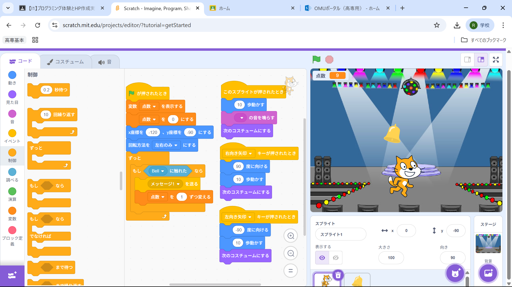

1-2 ゲーム

1.内容
二つ以上のキャラクターを使い上から降ってくるアイテムを集めるゲームを作った。
左右の矢印キーそれぞれに「○○キーが押されたとき」のコードを使い
任意のタイミングで矢印キーを使い左右移動の操作をできるようにした。
また、二つのキャラクターが触れたときに変数を増やすことで点数を表現した。
2.感想
ゲームの内容がシンプルで簡単なものだったので当たってしまうと点数がマイナスになるモノや
Shiftを押しながらだと左右の移動が速くなるなどのプログラムを組むことができたら
より面白いゲームになると思いました。
過去にスクラッチでゲームを作っていたこともあり今回の学習の内容は簡単に理解できました。